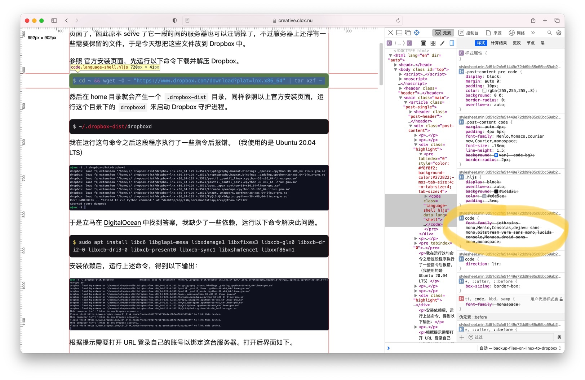

今天我把此 Hugo 站点关于 code 部分的字体改为 Jetbrains Mono，大致进行了以下几步。
我使用的是 Papermod 主题，其 Wiki 页面有讲述关于如何加入自定义 css 的方法。
于是我尝试将用 jsDelivr 加速的 Jetbrains Mono 字体静态加载1并生效于 code 中。
发布后，网站上并没有生效。

进行网页检查后发现，一般的 code 块 css 选择器是 .post-content code 而我这里只用了 code，因此我的 font-family 属性优先级太低了。
因此解决方式就是在 font-family 后增加 !important，或把自定义的 css 的选择器也改为 .post-content code 即可解决问题。